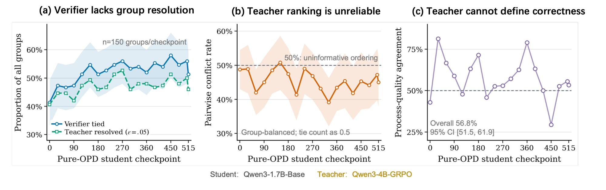
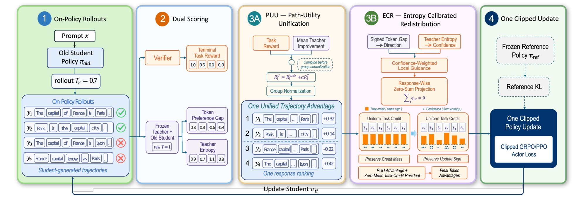
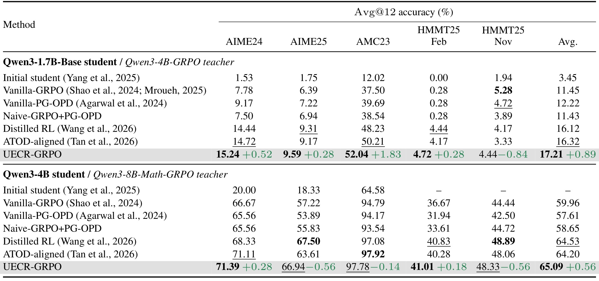
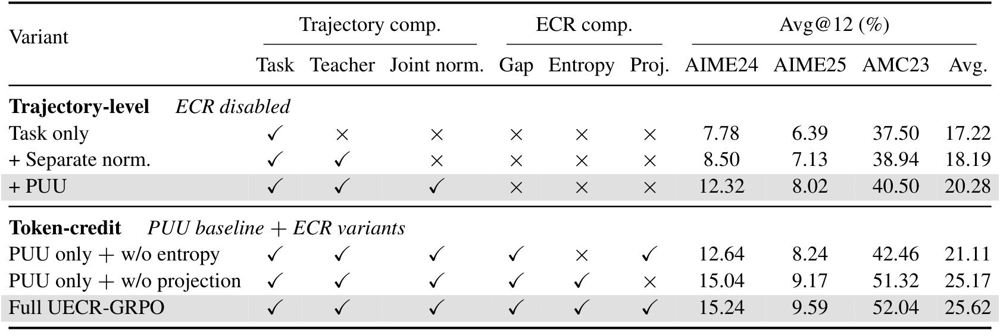
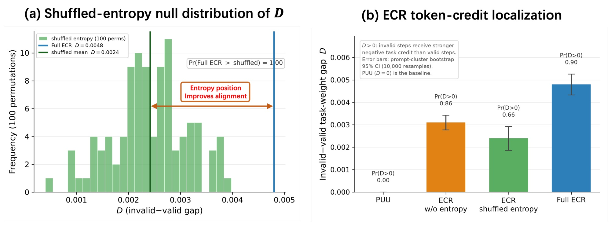

UECR-GRPO：何时相信教师，何处重新分配推理信用
Jie Zhang 等来自上海交通大学的研究者与浙江大学合作，在 2026 年 9 月 23 日公开了 When and Where to Trust the Teacher: Unifying On-Policy Distillation and GRPO through Entropy-Calibrated Credit Assignment。本文讨论数学推理后训练中，如何把最终答案验证与教师对学生生成过程的偏好放进同一个优化过程。论文入口为 arXiv:2609.28385，当前未核验到独立代码或项目入口。以下依据完整预印本及附录，区分算法性质、实训结果和离线诊断。
最终答案验证能够判断一条回答是否成功，却不能告诉模型哪些词元值得奖励；教师能够提供密集的局部偏好，但偏好不等于数学正确性。已有融合方法通常在验证器完成组归一化后才引入教师，而且逐词重加权可能连同整条回答的任务信用总量一起改变。
1. 背景和问题
数学推理强化学习的一个优势是有相对明确的外部验证器。模型解完题后，可以抽取答案，与参考值进行匹配，再返回零或一的奖励。这避免了完全依靠主观偏好模型定义任务，但标签粒度很粗：一条上万词元的回答最终失败，可能仅仅是中间一次符号错误，也可能从第一步就使用了错误假设。终局奖励把两者都映射成零，因而不能直接区分应该保留的局部过程和应该抑制的错误转折。反过来，答案正确也不保证每一步推导可靠，模型可能通过猜测或不严密的过程碰巧抵达结果。
GRPO 对同一道题生成一组回答，以组内奖励均值为基线，再用组内标准差缩放优势。这个设计省去了单独训练价值模型的成本，但没有自动解决信用分配。对一条回答算出的优势通常广播到所有词元，关键代数变换、标点、重复说明和错误的第一步都拿到同样的标量。模型参数的实际梯度当然还受词元概率和状态影响，因此不能说所有词元的参数更新相同；准确的说法是，来自任务奖励的优势系数缺少局部区别。
符号解释：同一题采样的回答数量为 $G$，$R_i^{\mathrm{task}}$ 是第 $i$ 条回答的验证器奖励，$\epsilon$ 避免分母为零。这里的优势只描述同一题内的相对位置。若整组回答全错或全对，每条回答的分子都为零，任务侧组相对信号消失；增加一个稳定分母并不能凭空产生区别。这一退化情况在困难题或已经掌握的题上都可能出现，所以不能简单理解成模型能力弱才会发生。
在策略蒸馏选择在学生实际访问过的前缀上请教师评分，恰好可以提供细粒度差异。教师不必重新生成标准答案，而是对学生已经生成的词元赋概率，再与旧学生对同一词元的概率比较。这样能够降低只学习教师轨迹所带来的状态分布偏移，也能在多个回答同为零分时辨认出不同轨迹。不过概率偏好混合了内容、风格、熟悉程度和模型自身的偏差，教师更喜欢某一步并不构成那一步正确的证明。一个数学上有效但不常见的解法可能得到较低概率，一个流畅但最终出错的解法则可能得到高分。

Figure 1 把这个矛盾分成三个可观测问题。左侧以十九个 Pure-OPD 检查点为横轴，每个检查点对一百五十道训练提示各生成八条回答，蓝线统计验证器奖励完全相同的组，绿线统计其中教师分数范围超过指定阈值的组。两条线相近说明教师经常能够打破验证器平局，正文给出的条件比例为退化组中的 84.3%–98.4%。这里必须注意分母：图中纵轴按全部组计数，而这一区间是在验证器退化的组内统计，二者不能直接当成同一比例。初始化的退化组占比为 41.3%，表明可利用的额外区分空间确实存在。
中间的图却提醒读者，能够区分不等于能够正确排序。它比较同一组里的正确与错误回答，以组为单位平衡权重，教师分数平局计作半次冲突。各检查点的冲突率在 39.1%–50.8% 之间，即教师仅凭自身概率偏好并不能稳定把正确回答排在前面。右侧进一步让独立且不知道方法信号的评审模型判断同奖回答的过程质量；在三百四十七对可判样本上，教师偏好与过程判断总体一致率只有 56.8%，图中给出约 51.5%–61.9% 的区间。它虽然高于一半，但远不足以把教师分数当作强过程标签。评审本身也是模型判断，仍有偏差，因此这组结果最稳妥的含义是反对无条件信任教师，而不是建立新的完美标签。
现有路线对这两种信号的接合位置不同。最朴素的混合把 GRPO 与 OPD 分别构造损失再相加，但两次裁剪的结果一般不等于先组合再裁剪。Distilled RL 使用教师与学生的概率比重新缩放正 GRPO 优势，在任务优势本来为零时，乘法仍然无法恢复组内信号，而且它保留的是几何归一化意义下的权重结构，不是逐词平均损失需要的算术信用预算。ATOD 已经把退火后的词元 OPD 优势与标准化 GRPO 优势放入一次裁剪更新，因此不能把它误写成两个独立损失；它的区别在于教师进入时，任务的组均值、尺度和奖励排序已经确定。
论文于是提出两个层次明确的问题：教师能否在组比较形成之前参与响应效用，帮助同奖回答产生可学习差异；在已有响应优势之后，能否仅重新安排任务信用的局部位置，而不暗中改变整条回答的任务预算。第一个问题对应 PUU，第二个对应 ECR。把它们分开很重要，否则性能改善究竟来自更好的轨迹排序、局部归因，还是仅仅放大更新强度，就难以解释。本文与大模型后训练直接相关；若迁移到推荐或代理任务，首先需要确定可靠终局反馈、分组单位和可评分的动作前缀，不能把数学答案验证的条件默认带过去。
这里“可信”的含义也有两个层次。响应层要避免辅助分数越过任务标签的边界，尤其是正确与错误回答同组时，教师分数的尺度必须相对二元奖励受控。词元层则需要承认一条失败回答也有可保留的内容，而不是把验证器结果当成每一步的监督。论文没有要求先训练过程奖励模型，也没有引入人工逐步标注到训练损失里；过程评审只用于离线检查。这让训练实现相对直接，但同时把局部信用质量的上限交给了教师概率与熵的代理关系，不能将其视为已解决精确因果归因。
旧策略与当前策略的区分同样不是术语细枝末节。学生先生成回答，评分器再对这些已实现的回答打分，最后才做参数更新。如果在更新中重新用当前学生概率定义教师差距，隐含奖励将随参数移动，所讨论的固定批优势与重要性比含义都会变化。作者坚持在一次更新内固定行为策略，使辅助反馈首先是一个可缓存的批内事实，然后才由策略梯度消费。与预先收集教师答案的数据蒸馏相比，学生实际走过的错误路径因此能够得到反馈；与直接根据教师生成路径训练相比，代价是每轮都要重新做长序列评分。
2. 方法
2.1 PUU：先形成统一路径效用
PUU 从完整回答是一条自回归路径出发。给定问题 $x$ 和已生成的前缀，教师、旧策略与待更新学生分别有自己的词元分布。教师被冻结，旧策略负责本批采样并在更新过程中保持固定，当前学生才接收梯度。教师提供相对于锚点的改进信号，而验证器始终显式规定任务效用。理论锚点写作 $P_0$，实际每轮取为旧策略的路径分布；长周期参考策略则是另一对象，不能与这两个角色混用。

Figure 2 从左到右描述了计算顺序。学生先以采样温度生成一组回答，第二列同时得到终局任务奖励、实际词元上的教师差距与教师熵。第三列在计算组统计量之前合并响应奖励，因此教师可以影响回答之间的排序；第四列把教师差距作为局部方向、把熵作为置信程度，形成经过零和约束的扰动。最后一列只做一次裁剪 actor 更新，参考 KL 从独立路径进入损失。图中底部回环表示更新之后重新采样下一批，而不是在同一批里随着参数改变重新定义教师奖励。这个时序决定了哪些量停止梯度，也决定了教师奖励和策略重要性比应分别使用哪一套概率。
读这张图还应识别两个容易误会的细节。图中的示意任务分数包含小数，是方法框架的概念展示；本文数学实验的验证器奖励按正文与诊断协议主要为二元正确性，不应拿图中的例子反推实际标签尺度。第四列所写的保持优势符号，严格对应被重分配的任务分量，而非包含教师响应分量的最终总优势。局部教师偏好再强，也先经过符号调节、熵衰减和整条回答内的投影，随后才与未重加权的教师分量相加。因此框图表达的是受约束的信息融合，不是让一个教师概率同时充当奖励、正确性和任意词元权重。所有额外评分均发生在训练期；训练完成后的学生推理不需要携带教师或验证器执行每个词元的反馈计算。
符号解释：$s_{i,t}$ 是问题和回答前缀，$\delta_{i,t}$ 是教师相对旧策略对实际生成词元的对数概率差，两边都用原始温度一。$P_T$ 与 $P_0$ 是完整路径概率，自回归概率连乘后取对数得到右侧恒等式。这一精确等式使用词元求和；它是理论连接，不包含后续为了控制长度而使用的均值归约。
符号解释：$Q$ 是候选路径分布，$\alpha$ 控制教师效用强度，$\beta>0$ 控制偏离锚点的代价。附录在支持集兼容、归一化常数有限的条件下证明 Gibbs 最优解唯一。关闭教师对应任务奖励倾斜；无任务奖励且两系数相等时目标变为教师；教师系数更大可对应沿教师相对锚点方向外推。这些是目标分布的性质，不表示有限样本 PPO 训练与这些极限过程严格等价。
符号解释：$m_{i,t}$ 只保留回答中有效 actor 词元，排除提示和补齐；$\mu_U,\sigma_U$ 为同题统一效用的均值和标准差。实际教师奖励取长度均值，避免回答越长教师项机械增大。附录评分配置还使用逐词差距截断，所以不能把实作奖励称为精确路径密度比。先合并再归一化使教师改变响应相对位置与尺度；但若教师系数过大，也可能把错误回答排到正确回答之上，后面的局部守恒不负责消除这个响应层风险。
符号解释：两个分量分别中心化，但共享统一效用标准差；$\mu_{\mathrm{task}}$ 与 $\mu_T$ 是各自组均值。中心化的线性性保证精确分解。如果分别除各自标准差，教师实际权重就会随每组经验尺度变化。退化组内任务分量仍为零，但教师分量可能非零，PUU 因而能保持响应间学习信号，而不是假装恢复了缺失的任务标签。
2.2 ECR：用符号与教师熵限定局部方向
ECR 接收上一步的任务分量和已评分的词元，输出局部信用调整建议。论文的初始化诊断覆盖三百个提示、两千四百条回答和约二千一百五十五万有效词元：绝对差距最大的前十分之一词元中，有 82.4% 落在最高熵四分位，熵校准令其平均幅度下降约 37%。这些量不是词元正确率，而是教师分布集中程度与概率差距的关联。它说明大差距可能来自不确定的分布，而不能直接解释为强而可靠的监督。
符号解释：$\mathcal V$ 是完整词表，$H^T$ 是教师全词表熵，$\tau_\delta$ 控制差距饱和速度，$\tau_H$ 控制熵衰减强度。方向 $d$ 有界，置信 $c$ 在零到一之间。正任务优势时，教师喜欢的词元倾向得到更大正信用；负任务优势时，符号翻转让这些词元倾向得到较轻惩罚。保护失败回答中的合理局部过程，不等于把失败回答转为正向模仿目标。经过下一步中心化后，具体词元还须相对本回答的置信加权基线判断，不能只看差距的正负。
这里选择教师全词表熵，而非学生对采样词元的惊讶程度，是因为二者回答的问题不同。单个词元低概率只能反映实际选择是否意外，无法区分教师将概率集中在另一个答案上，还是对许多候选都犹豫。全词表熵用后一种信息衰减建议，却仍不能证明低熵即正确；一个自信地犯错的教师仍可能影响更新。计算上需要在教师 logits 上得到完整归一化分布，附录用 float32 计算熵并通过分块评分与实际词元概率共用一遍前向，避免重复模型调用，但相对原生 GRPO 的显存与评分负担并未因此消失。
2.3 响应零和投影与单一策略更新
直接用局部建议做权重会改变整条回答的算术平均权重，因此 ECR 对每条回答单独做零和投影。附录把它写成置信加权的最小二乘问题：在和为零的约束下，寻找最接近原始置信方向建议的向量。这个约束针对有效回答词元，提示、padding 和数据并行补齐行都不能混入；真实空回答应报错。置信衰减极强时需数值稳定地处理分母，而不是产生任意大残差。
符号解释：$\mu_i^c$ 为响应内部置信加权方向均值，$q$ 是去中心化残差，$\rho$ 是局部重分配强度。由于方向位于负一到一，残差绝对值不超过一，权重始终为正。置信很弱或全部局部方向相同时残差消失，模型退回广播式 PUU，不会强行制造局部差异。
符号解释：前两式是响应内零和与算术均值守恒，最后一式是实际输入 actor 的优势。只重分配任务分量，教师响应分量保持广播；正权重保证任务分量每个词元的符号不变。守恒发生在 PPO 裁剪前的优势系数上，不是最终梯度、参数位移或裁剪后贡献的守恒。各词元重要性比、裁剪状态和对数概率导数不同，即使优势均值固定，更新方向和幅度仍会改变。
符号解释：归约运算只包含有效回答词元，$r$ 是采样温度下当前策略相对旧策略的重要性比，$\varepsilon$ 是 PPO 裁剪宽度，$\beta_{\mathrm{ref}}$ 为独立参考 KL 系数。原文强调算术词元信用预算，具体归约配置仍应与发布实现逐项对齐。评分温度一与 rollout 温度 0.7 不应混淆；参考 KL 只进入 actor 一次，不再计入教师奖励或组统计。关闭 $\rho$ 应精确恢复 PUU 损失及梯度，这是实现的直接回归条件。
3. 实验结果
3.1 五个数学基准的主结果
主实验分别以 Qwen3-1.7B-Base 和 Qwen3-4B 为学生，以冻结的 Qwen3-4B-GRPO 和 Qwen3-8B-Math-GRPO 为教师。小模型在 DeepMath-103K 难度五至七的数据上训练五百一十五步，大模型使用难度六至八的抽样子集训练一百六十步。全局提示批量为一百二十六，每题生成八条回答，训练和评估均使用非思考模式。同一尺度内对齐数据、解码、优化器、裁剪和参考 KL，教师辅助方法共享同一冻结评分器，因此比较重点是奖励和优势的组织方式。

Table 2 的所有数字是固定十二次采样解码下的 Avg@12 准确率百分数，最终平均给 AIME24、AIME25、AMC23、HMMT25-Feb、HMMT25-Nov 五个基准同样权重。它不等于一次采样准确率，也不等于十二次里只要有一次正确就算成功的 Pass@12。小模型 UECR-GRPO 的五项结果依次是 15.24、9.59、52.04、4.72、4.44，平均 17.21；最强平均基线 ATOD-aligned 为 16.32，所以增益是 0.89 个百分点。相对 Vanilla GRPO 的 11.45 有更大差距，但若要表达增量创新，应优先与已经融合教师的强基线比较，不能只选择弱基线制造显著提升的印象。
小模型在四个基准领先各自最强基线，领先幅度依次是 0.52、0.28、1.83、0.28 个百分点，HMMT25-Nov 则比 Vanilla GRPO 的 5.28 低 0.84 个百分点。大模型的五项成绩为 71.39、66.94、97.78、41.01、48.33，平均 65.09，比 Distilled RL 的 64.53 高 0.56 个百分点。然而它只在 AIME24 和 HMMT25-Feb 取得最好结果，在 AIME25、AMC23、HMMT25-Nov 分别低于最强基线 0.56、0.14、0.56 个百分点。因此平均获胜不是各任务一致获胜，若实际应用侧更关心某类题目，等权平均可能掩盖不符合需求的退化。
还有一个细节是表中绿色或负数差值按每个列的最好基线计算，未必来自同一种方法。不能把这些逐列差值相加后当成对 ATOD 或 Distilled RL 的统一比较。四十亿学生的初始模型有两个 HMMT 设置未评估，表里用横线表示，而不是零分；不能补零后计算初始五基准平均。本文没有在主表提供多独立训练种子带来的性能区间，也没有给每个微小差值的显著性判断，所以 0.14 或 0.18 个百分点这类局部差距只能按报告值描述。跨两个尺度平均提升具有方向一致性，但对稳定性的信心仍需更多重复训练与题级统计。
原文给出小模型学习率为百万分之一、单 PPO epoch、对称裁剪 0.2、参考 KL 系数 0.001，提示长度上限二千零四十八、回答上限一万六千三百八十四。这使读者可以理解教师评分为何可能昂贵：一个提示生成八条长回答，每条都需要额外教师 logits。附录列出了墙钟时间、rollout 时间、scorer 时间、tokens/s 和八张卡峰值显存的审计项目，却没有在当前主结果中给出完整可比较的效率表。因而不能据此声称比强基线更省卡、更快或在同算力下最优，精度收益与总训练成本需要分开评估。
3.2 分离归一化与信用重分配
作者把消融分成响应层与词元层两组，只在一点七十亿学生上进行。响应层关掉 ECR，比较任务独用、教师与任务各自标准化、以及统一响应效用标准化；词元层以 PUU 为固定前提，分别去掉熵或投影。这种顺序有助于判断新增信号和局部约束的作用，而不是把每个模块同时切换后仅看总收益。

Table 3 最需要先读的是评估范围。它只有 AIME24、AIME25、AMC23 三列，所以任务独用的平均 17.22 和完整模型平均 25.62，不能与 Table 2 的五基准 11.45、17.21 直接比较。前者没有两个总体较难的 HMMT 项，数值自然更高。这不是另一次突然提高了八个百分点的主实验，也不是更长训练带来的结果。完整模型在三个共同基准上的数值与主表一致，可以通过取三列算术平均核对这个口径。
上半组中任务独用平均 17.22，分别标准化为 18.19，PUU 为 20.28。PUU 相对分别归一化提高 2.09 个百分点，支持教师效用在同一组尺度中融合的设计。它不只提供额外教师信息，还改变任务与教师在每个组中的相对尺度，因此不能把增益完全解释为“教师让退化组有梯度”。下半组中去掉熵但保留投影的平均为 21.11，去掉投影但保留熵为 25.17，完整方法为 25.62。完整方法相对无熵提高 4.51 个百分点，相对无投影提高 0.45 个百分点，说明这批条件下熵校准的效果更大，而投影提供精确预算约束的同时有较小经验增益。
这也限制了如何讲贡献：不能说投影是全部性能提升的主要来源，不能把无投影的较高成绩解释成预算守恒毫无必要。前者被差值直接反驳，后者忽略了投影的可解释性和更新尺度控制价值。关闭熵时置信设为一，并重新计算投影；它不是简单把某个缓存乘数设为零。去掉投影则不再约束算术均值，这既改了局部位置，也允许改变整条回答的预算，因此比较并非纯粹的“少一个去中心化算子”。此外，这里没有所有因素的全组合、多系数重训和第二尺度组件消融，尚不能宣称每个教师、每种数据难度都有相同重要性排序。
离线 PUU 信号分析使用 AMC23 的四十道题，每题十二条回答，再分成八条和四条的伪组。指定检查点里，验证器退化组占 40%–53%，统一效用标准差超过阈值的组占全部组的 56%–90%；后一个比例并非只在退化组内计算。混合正确与错误回答的组中，教师项占两个优势分量绝对值和的 17%–25%，统一优势幅度接近 GRPO。这说明该诊断中教师有可见贡献又未压倒任务项，但优势绝对值比例不是梯度贡献率，更不是准确率贡献率。特别是这项审计使用固定基础模型作锚点，而训练每轮使用当前旧策略，二者应作为互补证据而非完全等价复现。
3.3 局部信用诊断与排序安全性
局部诊断专门选取混合奖励组里的错误回答，而且任务优势必须为负，排除空或没有推理内容的输出。这样评估的是“失败回答里能否少惩罚正确步骤、多惩罚错误步骤”。样本选择不参考教师分数、熵和最终权重，降低了挑选有利案例的风险。初始模型产生二百条候选回答后，确定性解析器按行、编号和句子切步骤，盲审 Opus 4.8 只看问题、参考答案和编号推理步骤，判断有效、错误、不确定或非推理，并标记至多一个首次实质错误。

Figure 5 左侧把同一条回答内熵的位置随机打乱一百次，保留该回答的熵值集合，却破坏“哪一步比较不确定”的位置信息。每次打乱都重新计算置信、加权均值、零和残差和最终权重，因此对照没有偷偷保留原方法的投影结果。完整 ECR 的错误减有效权重差为 0.0048，位于全部一百次置换结果右侧；打乱的平均差是 0.0024。这说明熵带来的价值不只是给整条回答一个普遍衰减系数，熵与具体步骤位置的对应关系也与独立评审更一致。
右侧展示 PUU、无熵 ECR、打乱熵 ECR 和完整 ECR 的响应平均权重差及按提示聚类的一万次 bootstrap 区间。PUU 每个词元权重都为一，所以差值严格为零；完整 ECR 的正差回答比例为 0.90，无熵为 0.86，打乱熵为 0.66。因为这里只分析负任务优势，错误步骤权重更大意味着更强的负信用，而不是获得更多奖励。图里的 0.90 是符合正差条件的回答比例，不是错误检测准确率，也不是词元级显著性水平。有效与无效由评审定义，不确定和非推理步骤排除，因此结果依赖步骤切分、模型判断及样本筛选范围。
符号解释：$I_i$ 是评审认定错误步骤中的词元集合，$V_i$ 是有效步骤中的词元集合；对响应求均值得总体 $D$。这项审计支持权重落点与过程质量有平均一致性，但既没有计算对应梯度占比，也没有对同一训练过程施加反事实干预，因而不能单凭这一张图证明准确率提升的因果机制。投影保持均值一只是说明重新分配了原任务预算；它与盲审的正相关合起来，才构成比“图上看起来更关注错误”更扎实的机制证据。
另一项固定 rollout 审计关注教师系数会不会破坏正确回答优先的顺序。作者用十七个 ATOD 训练的检查点，在 AMC23 上得到四百五十一组混合奖励样本、二万二千八百一十一对正确与错误回答。训练使用的系数一在这些样本中没有观察到严格的跨标签逆序；最早出现并列的已观测组阈值约为 3.88，检查点间使至少十分之一组开始逆序的系数在 7.6–11.5。它支持当前系数位于样本上的保守区间，但这里没有重新训练，评估组大小为十二或二十四而非训练的八，且超过八千一百九十二词元的回答被头部截断，比例约 10%–24%。因此不能写成普适排序保证或最优系数搜索。
更细的区分是：正确回答排在所有错误回答之前，仍然可能低于统一组均值，因而总优势为负。附录报告响应符号改变率在各检查点为 0–3.1%，这与跨标签逆序为零并不矛盾。ECR 保住的是任务分量符号，也不排除这个现象。初始化的预算数值检查则报告投影后均值偏差最大约为 $2.22\times10^{-16}$，无投影均值范围为 0.98–1.02；这个精度说明实现满足代数约束，不能推导优化器每步更新量只变化百分之二。
复现证据还有两处需要作者进一步澄清。附录 F.6 明确说训练清单针对 AIME24、AIME25、AMC23 的重复筛查结果，以及实际 checkpoint 选择规则仍需由完成的训练确认。因此不能把写在协议里的精确匹配、n-gram 和嵌入检索步骤当成已经执行并通过的事实。附录 Figure 8 的图注把四十亿学生的教师写为四十亿，与正文及 Table 2 的八十亿教师不一致；主结果按正文和主表理解，但曲线配置需核实。论文仍是预印本，以上是证据成熟度缺口，应影响复现信心而不是被平均分掩盖。
4. 总结
UECR-GRPO 最清楚的贡献是把两种决定分开：先决定一组回答的统一相对效用，再决定其中任务信用如何落到词元。PUU 的统一发生在组归一化之前，使教师参与均值、标准差与排序；ECR 则用任务符号、教师差距和教师熵形成局部建议，再用响应内零和投影约束预算。相比把蒸馏损失简单加到强化学习旁边，这种组织方式可以解释信息进入的时刻、哪些尺度会变化、哪些守恒量应该在实现中验证。
从实验看，两种 Qwen3 尺度的五基准等权 Avg@12 都提高，分别比最强平均基线高 0.89 和 0.56 个百分点，这是值得追踪的增量。小模型的三基准消融支持统一归一化和熵校准，在现有设置下熵的性能作用明显大于投影。独立步骤评审和熵位置置换又说明完整 ECR 的局部权重更倾向惩罚错误步骤。它们是不同层面的证据：主表证明指定条件下的表现，消融帮助定位组件价值，离线诊断帮助理解信号性质；不能把三者直接相加成“教师已经学会判定过程正确”的更强结论。
我认为最可迁移的是分开响应效用、局部权重和更新尺度的建模纪律。只要训练系统同时有稀疏终局反馈和较密集但不完全可信的辅助评分，就可以先问：辅助信息应在归一化前还是后进入；局部乘权是否同时改变样本级重要性；负样本中的合理动作是否被无差别惩罚。本文给出一个可计算、可退化到基线、带精确数值不变量的答案。若借鉴到推荐序列或工具调用任务，应重新确认终局指标的可靠性、分组是否共享相同条件、动作长度的含义以及教师置信的校准程度。这是我的迁移判断，论文没有提供这些领域的实测增益。
实际复现时，我会先利用论文给出的退化关系验证实现，而不是直接比较训练曲线。关闭局部强度时，最终优势应与PUU逐词完全相同；关闭教师评分时，应恢复原生GRPO并且无需加载教师；每条非空回答在有效掩码上的任务权重均值应等于一。还需检查两种奖励分量共享同一个标准差，参考KL没有在奖励和损失两处重复出现。这些检验无法证明性能必然复现，却能先排除把另一种算法误认作UECR的风险，尤其适合定位长度归约、padding和温度配置造成的隐性偏移。
局限同样具体。教师概率仍可能偏爱错误路径，熵只能削弱不确定指导而无法纠正自信错误；长度均值与逐词截断令实际训练不再精确优化理论路径比目标；预算守恒不保证梯度守恒；大模型有三个单项落后；主表缺少重复训练方差，强基线之间的小差距需要更多统计证据。全词表熵的成本、实际数据去重和 checkpoint 选择也需要补全，尤其不能因为附录罗列了审计项目就当作对应结果已公开。暂无可核验独立代码入口进一步限制了逐项复现。
后续最有价值的验证是对同一教师与学生条件做多种子重训，报告逐题差异区间，并对教师系数、熵温度和重分配强度进行真正的训练敏感性实验。与此同时，应把真实全局提示数、轨迹数、有效词元数、评分时间和峰值显存与精度一并报告，防止数据并行补齐或长度分布改变造成隐性计算预算差异。若这些证据能够补齐，才更容易判断平均收益是否足以覆盖额外评分成本。当前可将它视为结构清晰、局部诊断细致的后训练研究候选，保留对普适性、成本和复现完整性的审慎判断。